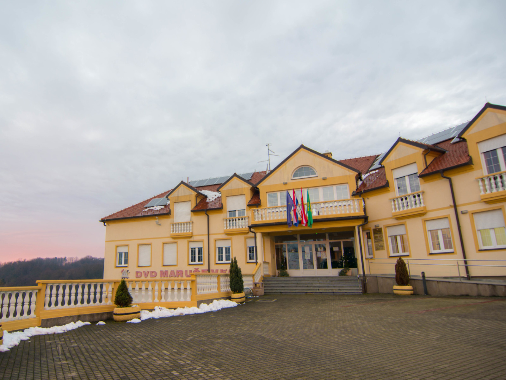
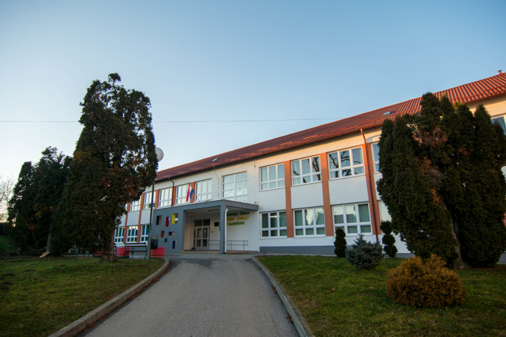

Istraži
Dvorac
Dvorac Maruševec se prvi puta spominje 1547. godine pod vlasništvom obitelji Vragović. Nakon obitelji Vragović postaje vlasništvo Pasztory, zatim Katonaj te Patačić. Patačići su vlasnici dvorca do 1817. godine kada umire posljednji muški Patačić. 1873. dvorac je kupljen od grofa Schlippenbacha koji ga je dogradio te je tako dvorac ostao do danas. Nakon smrti grofa, 1881. dvorac kupuje Oskar Pongratz 1883. godine. Dvorac je bio u vlasništvu obitelji Pongratz do 1945. godine kada je oduzet nacionalizacijom. Dvorac je prije par godina vraćen nasljedniku Pongratz.
{kind=link}
{kind=link}
{kind=link}
{kind=link}
Crkva
Među najstarijim crkvama nalazimo i ime crkve Svetog Juraja u Maruševcu. Neki izvori, na koje upozoravaju poznati povjesničari, govore kako je prvi zapis o toj crkvi još iz davne 1269. godine, što je ubraja u red najstarijih sakralnih spomenika na tlu kontinentalne Hrvatske. U nadbiskupskom arhivu Zagrebačke nadbiskupije varaždinskog arhiđakonata spominje se crkva u Maruševcu 1334. godine. Ta godina s potpunom sigurnošću označava vrijeme i starost ove crkve. Isti dokument navodi da se crkva Sv. Juraja nalazi u Marjaševcu, kako se tada selo Maruševec zvalo. Već 1501. godine u ovoj župi su bila dva svećenika, župnik Juraj i Valentin. Krajem 17. stoljeća u crkvi su bila čak tri svećenika: Andrija Katulić, Tomo Jagatić i Ivan Mužinić. Župna crkva u Maruševcu bila je u svojoj dugoj povijesti više puta popravljana, pregrađivana i dograđivana. Najtemeljitija obnova crkve bila je 1913. godine, kada je i dotad neravni pod crkve tako izravnat da su stupovi u lađi zašli duboko ispod razine poda. Na jednom od zaglavnih kamena crkve urezan je zapis koji govori o 1482. godini. Na malom proplanku ispred crkve stajao je sve od 1913. godine kip svete Marije Magdalene. Prilikom obnove crkve, te je godine kip uklonjen.
{kind=link}
{kind=link}
{kind=link}
{kind=link}
Općina

Trenutna zgrada Općine Maruševec izgrađena je na mjestu stare Osnovne
škole Maruševec u selu Maruševec. Prijašnja nastamba nalazila se u
selu Čalinec te je bila znatno manja. Izgradnja nove općinske zgrade
počela je 2007. godine s dobivenim sredstvima. Trenutni načelnik je
Mario Klapša koji je ostvario pobjedu na prethodnim izborima u drugom
krugu u lipnju 2021. godine.
Površina općine (u hektarima) iznosi 4.998. Broj stanovnika prema
popisu iz 2011. iznosi 6.381.
U općini Maruševec nalazi se 16 naselja: Bikovec, Biljevec,
Brodarovec, Čalinec, Cerje Nebojse, Donje Ladanje, Druškovec, Greda,
Jurketinec, Kapelec, Korenjak, Koretinec, Koškovec, Maruševec, Novaki
i Selnik.
Prvi spomen Maruševca nalazimo već 1351. godine u dokumentima kojima
je hrvatsko-ugarski kralj Ludovik I Nažuvinski dodijelio plemstvo
Grgoru od Maruševca (u listini “od Marjaševca”). Plemstvo je Grgor
stekao za zasluge u Mletačkom ratu i u borbama pri osvajanju grada
Zadra. Istim dokumentom spominje se i mjesto Marjaševac kod Svetog
Jurja, što se mora odnositi na župnu crkvu Sjetoga Juraja u Maruševcu.
Drugi dokumenti spominju istoimenu crkvu već 1334. godine, pa čak
1269. godine.
Osnovna škola

Školstvo u Maruševcu počelo je na temelju ugovora od 18.02.1839 godine
koji je sklopljen između Prosvjetne uprave zagrebačke te Općine
Maruševec kojim je osnovana seoska pučka škola. Stara zgrada osnovne
škole izgrađena je nasuprot župnog dvora te je obuhvaćala jednu učionu
i stan za učitelja te prostran vrt. Najstariji podaci o učenicima
zabilježeni su za školsku godinu 1859./1860. godine. Preimenovanje
škole zabilježeno je 90-ih po poznatom književniku Gustavu Krklec
rođenom u Maruševcu koji je pohađao školu u Maruševcu od 1905.-1909.
godine. Osnovna škola "Gustav Krklec" Maruševec.
Osnovna škola "Gustav Krklec " Maruševec obuhvaća matičnu školu u
Čalincu i dvije područne škole sa sjedištem u Druškovcu i Gredi. Ove
školske godine školu pohađa 455 učenika raspoređenih u 29 razredna
odjela.